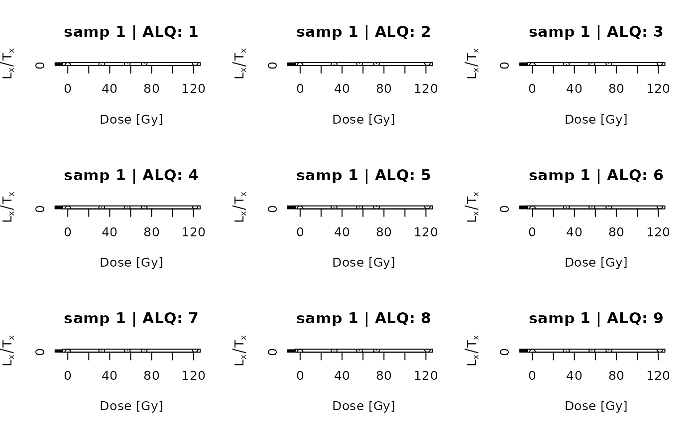
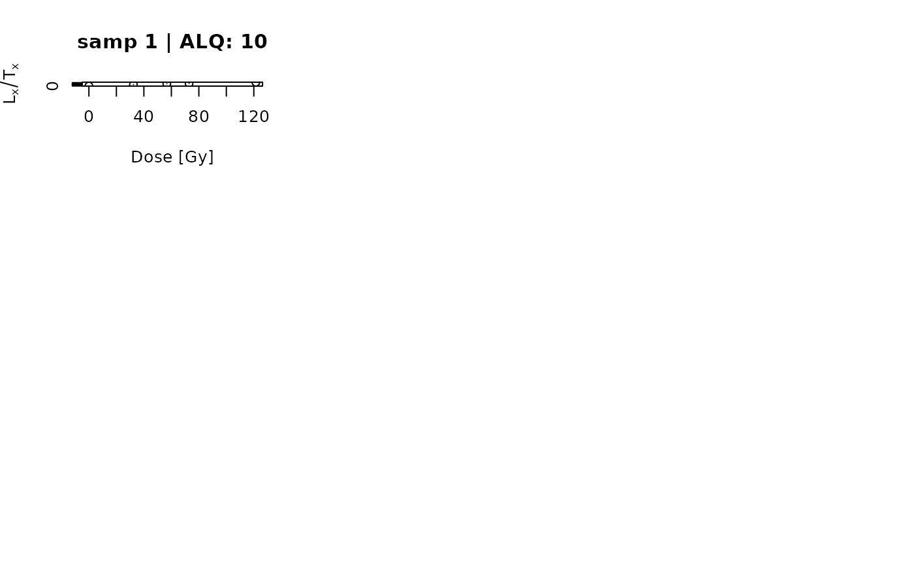

Simple plot functionality to visualise $L_x/T_x$ values against the dose extracted from data created by create_DataFile
Arguments
- object
list (required): input object created by create_DataFile
- nrow
integer (with default): number of rows used for the plot panel
- ncol
integer (with default): number of columns in the plot panel
- ...
further plot arguments passed down to modify the plot output. Supported arguments are
xlab,ylab,type,pch,col,cex
How to cite
Kreutzer, S., 2024. plot_RegDosePoints(): Plot Regeneration Dose Points. In: Christophe, C., Philippe, A., Kreutzer, S., Guérin, G., Baumgarten, F.H., Frerebeau, N., 2024. BayLum: Chronological Bayesian Models Integrating Optically Stimulated. R package version 0.3.3.9000-13. https://CRAN.r-project.org/package=BayLum
Examples
data(DATA3,envir = environment())
plot_RegDosePoints(DATA3)

